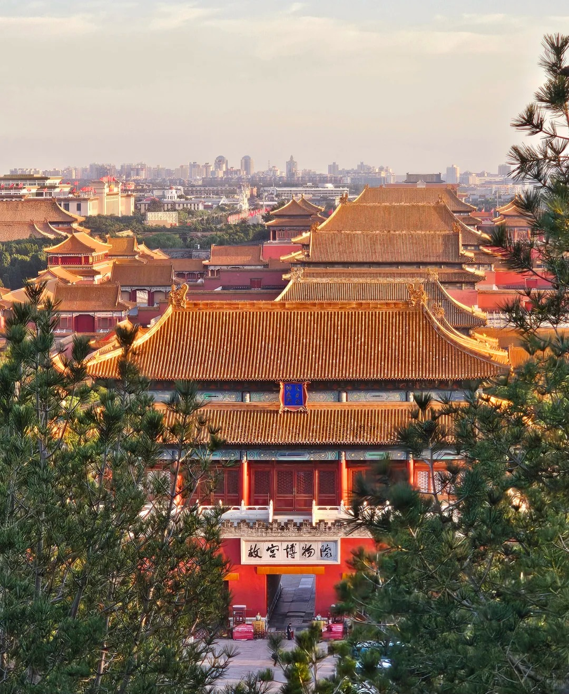
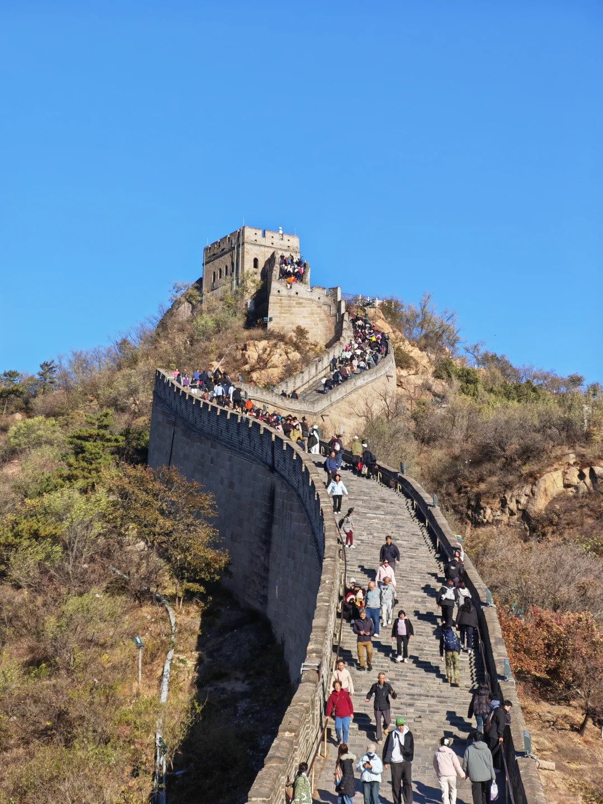
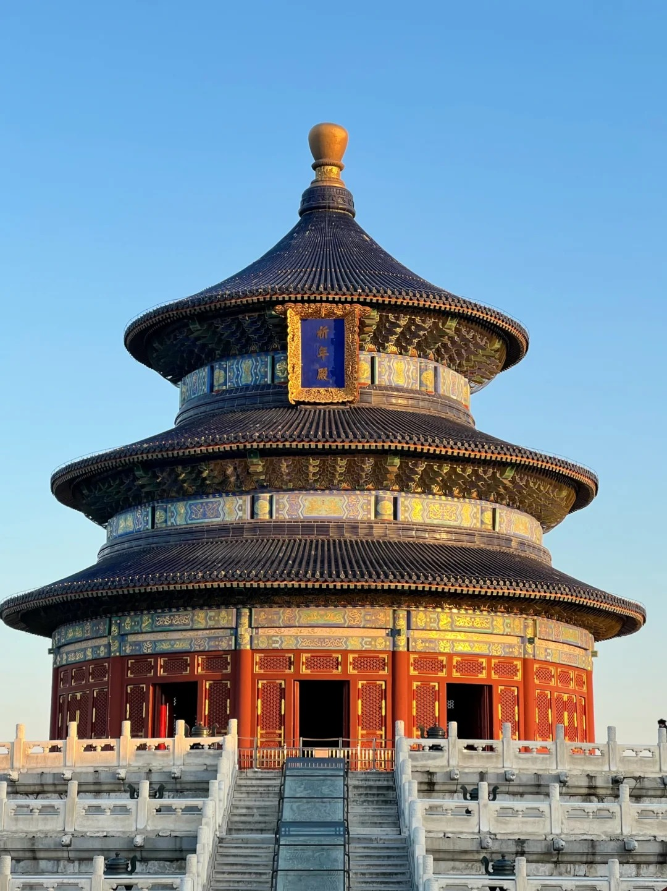
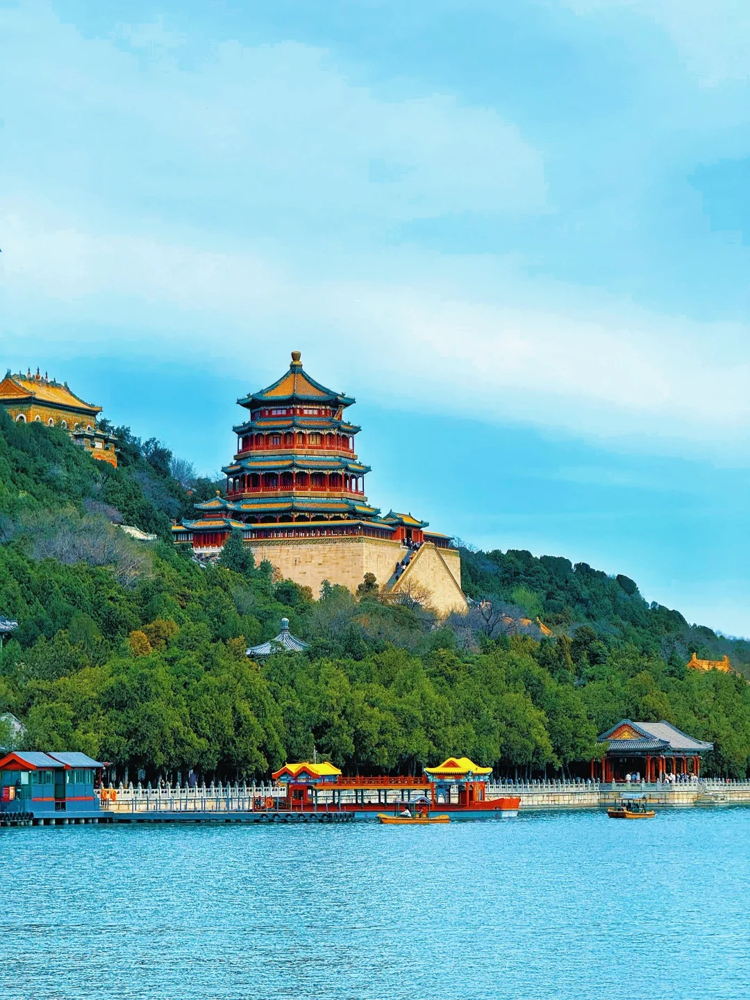
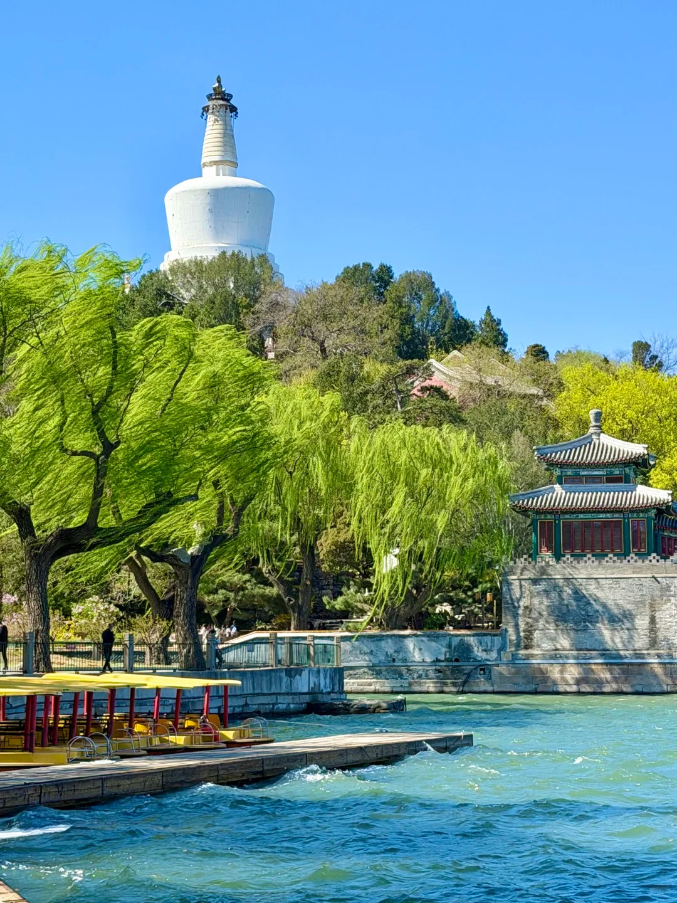

Walk through the corridors of imperial history
Beijing is home to some of the world's most magnificent and historically significant architectural wonders. Embark on a journey to witness the grand legacy of ancient dynasties.

Located at the exact center of the ancient city of Beijing, it was the imperial palace during the Ming and Qing dynasties. With over 9,000 rooms, it is the largest and best-preserved wooden palatial structure in the world, embodying the supreme authority and strict hierarchy of absolute monarchy.
Plan Visit
No trip to Beijing is complete without visiting this awe-inspiring monumental feat of ancient engineering. Sweeping across misty mountain ridges, the Great Wall served as China's ultimate defense system. The Badaling and Mutianyu sections are the most renowned for their majestic vistas.
Plan Visit
An exquisite complex of religious buildings situated in the southeastern part of central Beijing. Emperors of the Ming and Qing dynasties visited the complex annually, holding ceremonies to pray for good harvests. The park is now a gathering place for locals practicing Tai Chi and traditional arts.
Plan Visit
A masterpiece of Chinese landscape garden design. The natural landscape of hills and open water is combined with artificial features such as pavilions, halls, palaces, temples, and bridges to form a harmonious ensemble of outstanding aesthetic value.
Plan Visit
One of the oldest, largest, and best-preserved ancient imperial gardens in China. Dominated by the iconic White Stupa standing tall on Jade Island, Beihai Park offers a tranquil retreat from the bustling city, preserving the romantic spirit of imperial gardens.
Plan Visit